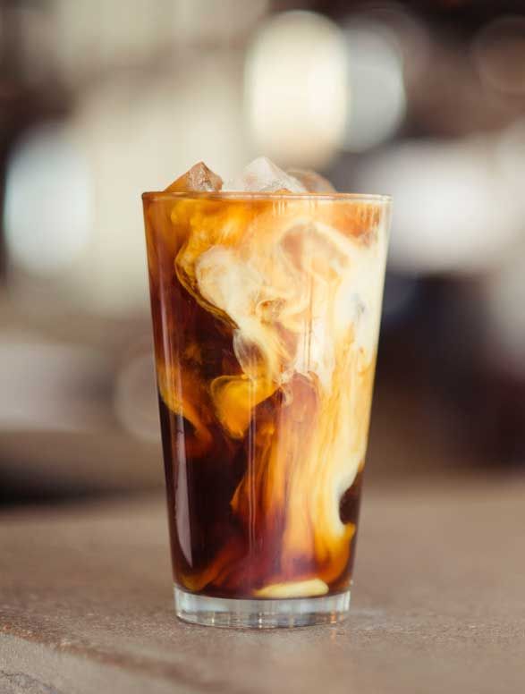
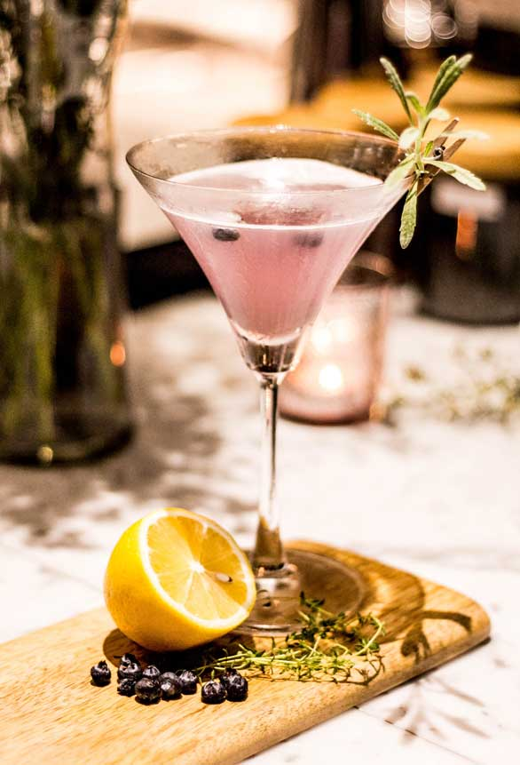
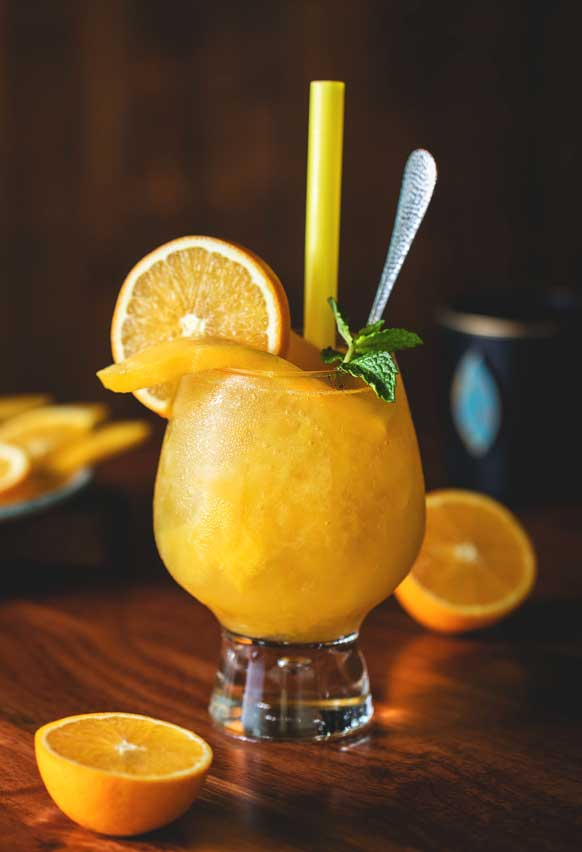
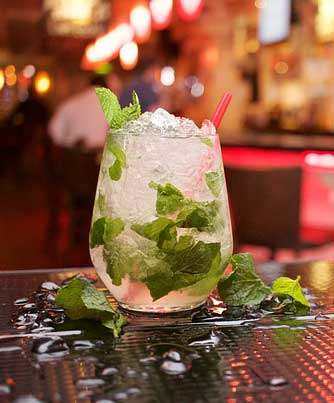
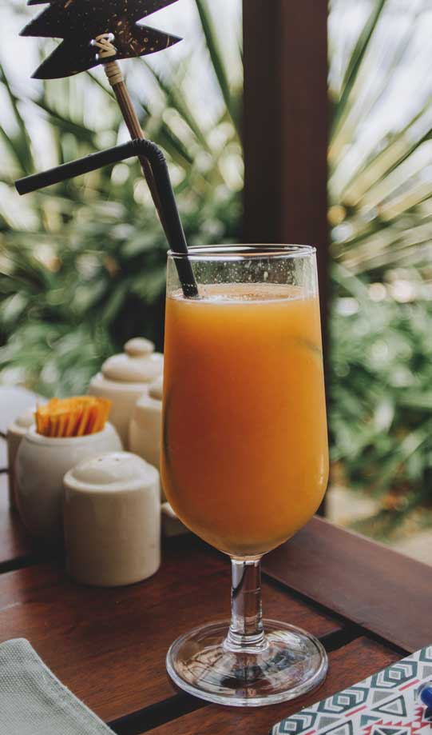
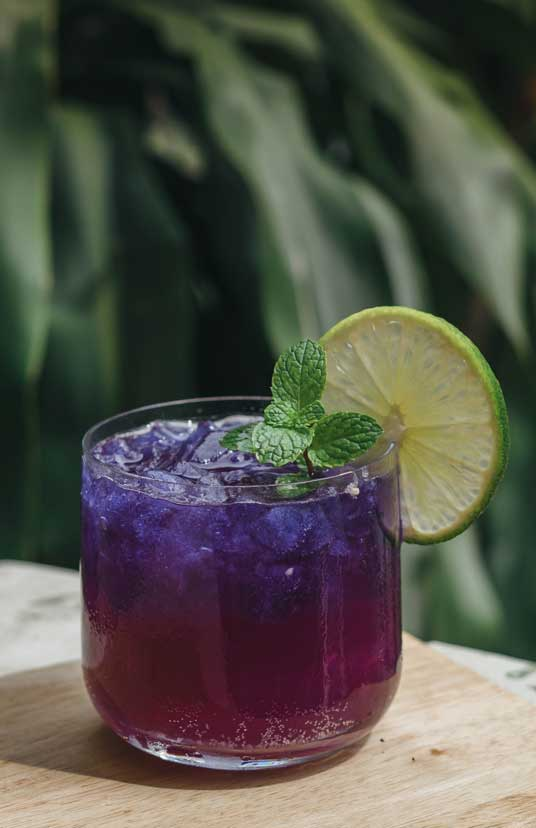

Gin cocktails

Ingredienser
3 cl Likör 43
3 cl Tequila
6 cl Kaffe
2 cl Sockerlag
Mjölk
Instruktioner
Brygg en kopp starkt kaffe.
Fyll ett glas med is.
Skaka Licor 43, tequila, kaffe och sockerlag med is i en shaker.
Sila upp drinken i glaset.
Fyll upp med mjölk och smaka eventuellt av med mer sockerlag.

Ingredienser
4 cl Tequila
2 cl Apelsinlikör (Triple sec)
2 cl Limejuice
Instruktioner
Förbered margarita-glaset genom att först sprida ut ett lager salt på ett fat eller an assiett.
Fukta glasets kanter med vatten eller limejuice.
Doppa glaset i saltet så att det fastnar.
Blanda sedan alla ingredienser i en shaker.
Fyll shakern med is och skaka.
Sila upp drinken i glaset.
Garnera.

Ingredienser
4 cl Tequila
8 cl Passionsfruktjuice
2 cl Limejuice
1 cl Sockerlag
Instruktioner
Häll alla ingredienser i en shaker och fyll upp med is.
Skaka tills drinken blivit kall.
Sila upp i ett champagneglas.
Garnera med ett limehjul.

Ingredienser
2 cl Gin
2 cl Vodka
2 cl Ljus rom
2 cl Tequila
2 cl Blå Curaçao
1 cl Sockerlag
1 cl Citronjuice
1 cl Limejuice
7 Up
Instruktioner
Fyll ett glas med is.
Tillsätt alla spritsorter samt citronjuice, limejuice och sockerlag.
Toppa med 7 Up och rör om.
Garnera.

Ingredienser
4 cl Tequila
2 cl Grenadin
Apelsinjuice
Instruktioner
Fyll ett glas med is och tillsätt tequila
Fyll upp med apelsinjuice och rör om.
Håll baksidan av en sked mot kanten av glaset och häll grenadin försiktigt mot skeden så att det sjunker ned mot botten och skapar en "sunrise".
Garnera på valfritt sätt.

Ingredienser
2 cl Ljus rom
2 cl Tequila
2 cl Gin
2 cl Vodka
2 cl Apelsinlikör (Triple sec)
2 cl Sockerlag
1 cl Citronjuice
1 cl Limejuice
Coca-Cola
7 Up
Instruktioner
Fyll ett highball-glas med is.
Tillsätt alla spritsorter samt sockerlag, limejuice och citronjuice.
Toppa med en skvätt Coca-Cola och rör om försiktigt.
Garnera.